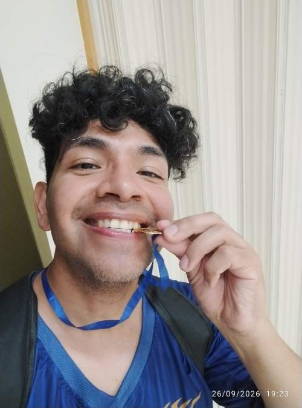

Abraham Javier Romano | WDD 130

Hello everyone! My name is Abraham and I'm from Argentina, Salta, I like football soccer and my best soccer player is Messi. Since two years ago, I moved to another country. Now I live in São Paulo, Brazil. All my family lives in Argentina, while my wife and I live here in São Paulo. This is a decision we made for a few years. We want to return to our country because sometimes we miss Argentina. We are part of a new stake in Guarulhos, and this year there was an inauguration of the new Brazil Guarulhos Mission. In this state, we have two temples. The nearest one is the São Paulo Temple, located in the capital city. And we have a cat named Perla.